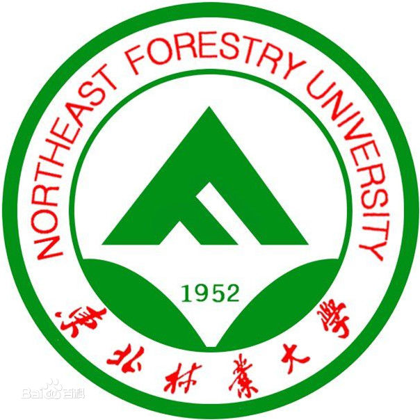

Undergraduate Related Experience

Northeastern Forestry University
Name: Yongxin Peng
Department: Transportation Engineering Department
Degree: Bachelor of Engineering in Traffic Engineering
GPA: 3.32
Project in NEFU
- Traffic Engineering Research Office, Traffic College, NEFU
From May. 2016-July. 2016 as the Investigation Team Leader
- Investigated occupancy of private cars in Harbin.
- Transportation department of government of Harbin used those occupancy data to decide the permit for car sharing program and decide to build HOV in Harbin.
- Traffic Engineering Research Office, Traffic College, NEFU
From Apr. 2015-May. 2015 as the Investigation Team Leader
- Investigated the traffic volumes, overall vehicle speeds, and traffic density at three major crossroads in Harbin and completed an analytical report.
- Investigated the parking turnover rate and peak hour volumes of each parking lot on campus and provided data basis for parking lots reconstruction planning.
- Investigated the passenger flow at entrances and exits of Subway Line 1 of Harbin.
- Zhaozhou County Transportation Planning Office
From Apr. 2014-May. 2014 as the Leader of the 4th Statistics Team in the Research Office
- Conducted statistical analysis of travel behavior based on questionnaires finished by permanent residents of Zhaozhou County and gave advice on future planning.
Activity in NEFU

- Volunteer for National Higher Education Entrance Examination in Harbin
- Entrances and exits planning and control, traffic guidance, emergency handling.
- Clubs Evening held by NEFU Federation of Student Clubs
- Liaison between clubs, performances arrangement, implementation monitoring and report writing.
- Annual Outstanding Member of NEFU Federation of Student Clubs.
- Red Cross First Aid Training
- Received training on various first aid treatment and qualified for first-aider.